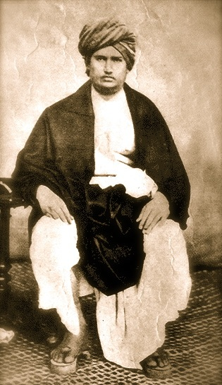

Dayanand Saraswati
12 February 1824 – 30 October 1883
Founder of the Arya Samaj
Early Life
Born in Tankara, Gujarat, Mool Shankar (his birth name) left home at 21 to seek spiritual truth. He wandered as a ascetic for 15 years, studying under various gurus before emerging as Swami Dayanand Saraswati.
The Arya Samaj
In 1875, he founded the Arya Samaj in Bombay. The Samaj's principles include belief in one God, the infallibility of the Vedas, rejection of idolatry, caste discrimination, and superstition. It became a major force for reform in North India.
Back to the Vedas
Dayanand proclaimed "Go back to the Vedas," arguing that Vedic society was egalitarian and that later additions like caste hierarchy and idol worship were corruptions. His book Satyarth Prakash (Light of Truth) critiques various religious practices.
Social Reform
He campaigned against child marriage, dowry, and untouchability. He promoted women's education, intercaste marriage, and widow remarriage. The Arya Samaj also played a significant role in India's freedom movement and in establishing educational institutions.
Legacy
Dayanand Saraswati's Arya Samaj continues to run schools, colleges, and hospitals worldwide. His emphasis on rational interpretation of scriptures and social equality influenced modern Hindu thought and India's reform movements.